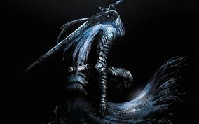
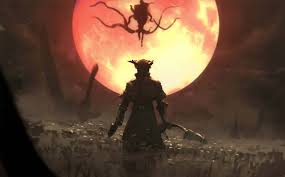
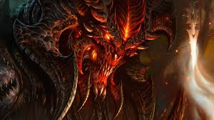

GameZone
Blogs de Videojuegos
Podcasts
Suscripción OPML
Últimos Artículos sobre Videojuegos
Dark souls

Bloodborne

Diablo

Últimos Podcasts sobre Videojuegos
El futuro de los juegos en la nube
Tu navegador no soporta la etiqueta de audio.
Entrevista con desarrolladores indie
Tu navegador no soporta la etiqueta de audio.